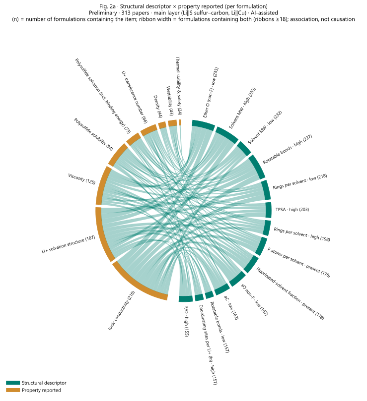
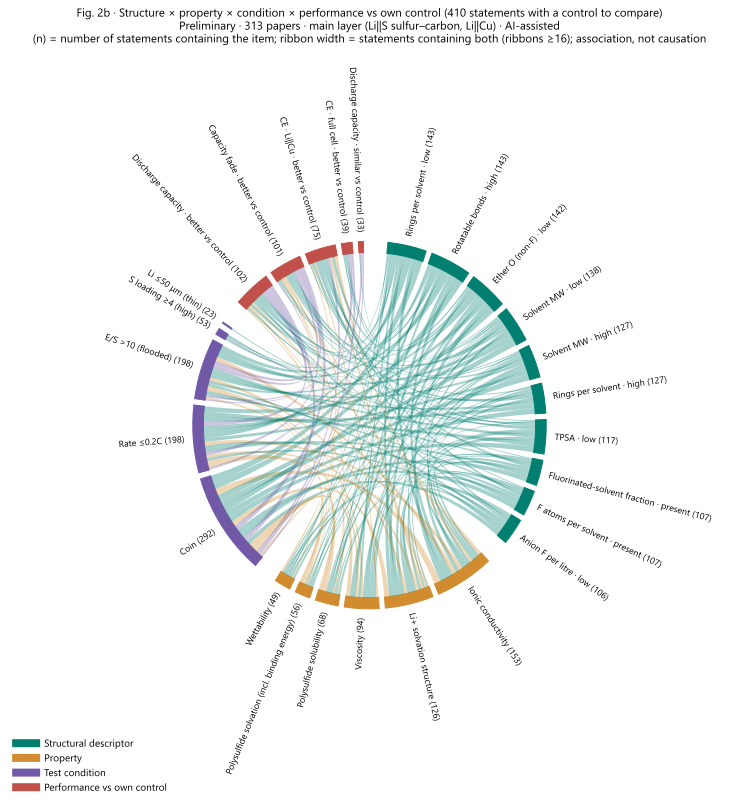

From papers to
comparable statements.
Every reported performance value becomes one statement: the formulation, the properties reported by the same paper, the test conditions and the value. Statements are normalised to one common test condition so that papers can be compared, then searched for contradictions that are checked against the source text.
Preliminary · AI-assisted extraction and review, not yet confirmed item by item by the user.
Conceptual diagram · no data values
What the pilot shows
Analysis set: rate capacity excluded · discharge capacity = first cycle only (your decision)Analysis set (your decision): rate capacity is excluded; discharge capacity uses the first cycle only. Four normalisation models: first-cycle discharge capacity (11 papers), capacity retention (12), full-cell CE and Li‖Cu CE (5 each).
Validation is weak. V1 within-paper R² of the selected models is near zero (−0.5 to 0.05): for an unseen paper, the model cannot say how much better one formulation is than another. It does call the direction correctly 75% (first-cycle capacity) and 87% (retention) of the time. V2 gains of 0.33 and 0.14 show the condition correction helps somewhat.
After normalisation only 3 cross-paper pairs share the same formulation (the standard ether electrolyte); the largest gap is 1.44×, below the 1.5× threshold. 85 of 193 modelled statements are too far from the common condition and are flagged as extrapolation.
Six contradiction candidates, all checked against the source text: 🔶 4, ❌ 2, ✅ 0.
SAME001 (adding LiNO₃ raises first-cycle capacity in one paper and lowers it in another) is explained by the cut-off voltage: P113 discharges to 1.5 V, where LiNO₃ reduction adds capacity; P668 stops at 1.7–1.8 V. The cut-off voltage should become a model condition.
Three DESC items (P609 vs P510) show that F/O mixes anion fluorine (LiTFSI → LiFSI) with solvent oxygen (hexane → DME); the descriptor needs to be split.
Two DESC items (adding DMDS or DMTS) are not contradictions: organosulfur co-solvents contribute capacity and should be stratified separately.
No condition-dependent flips this time: the earlier ones lay in non-first-cycle capacity or rate capacity, which this analysis set excludes.
- How to adjust the normalisation (you asked to discuss it separately): V1 R² is near zero. Options include adding conditions such as the cut-off voltage, splitting descriptors, using fewer features, changing the model form, or waiting for the full dataset.
- How to fix the baseline performance of the standard ether electrolyte (the plan leaves this open; the pilot uses the median of each paper's normalised standard-ether values).
- Whether organosulfur co-solvent formulations (DMDS, DMTS) are stratified separately.
Components with amounts as written in the paper, plus formulation-level elemental ratios (sO in three fluorination bins, aC, F/O, InOr).
Only values the same paper reports for the same recipe; otherwise “not reported”. Nothing is filled in or inferred; names are unified first.
E/S, sulfur loading, cathode sulfur content (electrode basis), Li thickness or N/P, rate, temperature, cell format and cycle number.
One value per statement, mapped to four performance classes. Mechanisms are not written into the statement; they stay linked by ID.
[Formulation] P609 F_F: 0.4 M LiFSI; 0.1 M LiNO3; DME (single solvent) | sO 0.122, aC 0.000, F/O 0.04, InOr 0.59 [Properties] Density: 0.89 g mL−1；标准差<±0.005 g cm−3 (measured); Ionic conductivity: 7.05 mS cm−1 (measured); Li⁺ transference number: 0.45 (measured); Polysulfide solvation (incl. binding energy): FSI− DN 10.7 kcal mol−1，较强多硫化物溶剂化 (measured); Polysulfide solubility: 1.5 M (measured); others not reported [Conditions] E/S 5 μL mg⁻¹; S loading 5 mg cm⁻²; cathode S conflicting / multiple; Li 400 μm; N/P not reported; rate 0.5 C; T 25 °C; cell Coin; 1st cycle; Li‖S, Sulfur–carbon [Performance] Discharge capacity · S-specific discharge capacity = 1180 mAh g−1 (sampling point as extracted: 初始)
Free-text fields copied from the extraction (sampling point, some property descriptions) are in Chinese and shown as recorded.
570 statements
One statement per reported performance value · values as reported (not normalised)“In analysis = no” marks rate capacity and non-first-cycle discharge capacity, which this run leaves out of models, figures and contradiction search; they stay in the table. Empty conditions mean the paper did not report them or they could not be derived.
Normalisation & cross-paper comparison
Preliminary · weak validationOne scoring function for all formulations
Within one paper the cathode, process and lab are shared, so each paper's own level is removed and only within-paper differences train the model. Inputs: formulation descriptors (sO in three bins, aC, F/O, InOr, LiNO₃ and main-salt concentration, other additives) and test conditions (E/S, S loading, cathode S, rate, temperature, pouch; cycle number for retention and CE). One model per performance class; six model types compared.
Conditions not reported in the paper are not converted. Statements far from the standard condition (cycles >10×, E/S or rate >2×, loading off by more than the standard value) are flagged as extrapolated and kept out of ranking and contradiction search.
Train without a paper, then predict the differences between its formulations. Can we rank formulations in an unseen paper? · done
Hide one test condition of a paper and predict it; compared with guessing the paper's other-test mean. Is the condition correction reliable? · done
Can a pair compared in just one paper be inferred from the others? · not done: too few shared formulations in 30 papers
Retrain on bootstrap samples of papers; rank correlation and top-5 overlap. · done
Measure selected formulations under the standard condition. · final step
Plus a physical check: normalised S-specific capacity above 1672 mAh g⁻¹ (organosulfur co-solvents excepted) or retention above 100% counts as a violation.
Validation results
R² near 1 is good; 0 equals “predict no difference”; negative is worse than that. RMSE is in ln units (0.2 ≈ ±22%; for CE it is the error in the per-cycle Li loss). Direction = share of formulation-vs-control comparisons with the right sign (chance = 50%). Selection rule, fixed before running: among models with ≤5% physical violations, take the highest V2 skill.
| Class | Model | V1 R² | V1 RMSE | V1 direction | V2 skill R² | V2 RMSE | V2 baseline RMSE | Violations |
|---|---|---|---|---|---|---|---|---|
| Discharge capacity | Ridge (fixed effects) | -0.242 | 0.221 ≈ ±25% | 0.5 (20 pairs) | -0.177 | 0.342 ≈ ±41% | 0.315 | 0.0 |
| Discharge capacity | Linear mixed model | -4.571 | 0.467 ≈ ±60% | 0.7 (20 pairs) | -0.006 | 0.316 ≈ ±37% | 0.315 | 0.0 |
| Discharge capacity | Gradient boosting | -0.25 | 0.221 ≈ ±25% | 0.75 (20 pairs) | 0.139 | 0.293 ≈ ±34% | 0.315 | 0.0 |
| Discharge capacity | Monotone gradient boosting | -0.247 | 0.221 ≈ ±25% | 0.8 (20 pairs) | 0.151 | 0.291 ≈ ±34% | 0.315 | 0.0 |
| Discharge capacity | Random forest | 0.005 | 0.197 ≈ ±22% | 0.9 (20 pairs) | -0.167 | 0.341 ≈ ±41% | 0.315 | 0.0 |
| Discharge capacity | Gaussian process · selected | -0.03 | 0.201 ≈ ±22% | 0.75 (20 pairs) | 0.325 | 0.259 ≈ ±30% | 0.315 | 0.0 |
| Capacity fade | Ridge (fixed effects) | -0.269 | 0.252 ≈ ±29% | 0.435 (23 pairs) | -0.03 | 0.283 ≈ ±33% | 0.278 | 0.027 |
| Capacity fade | Linear mixed model | -5.211 | 0.558 ≈ ±75% | 0.652 (23 pairs) | -0.807 | 0.374 ≈ ±45% | 0.278 | 0.0 |
| Capacity fade | Gradient boosting | 0.057 | 0.217 ≈ ±24% | 0.87 (23 pairs) | 0.133 | 0.259 ≈ ±30% | 0.278 | 0.027 |
| Capacity fade | Monotone gradient boosting · selected | 0.052 | 0.218 ≈ ±24% | 0.87 (23 pairs) | 0.144 | 0.258 ≈ ±29% | 0.278 | 0.0 |
| Capacity fade | Random forest | 0.028 | 0.221 ≈ ±25% | 0.826 (23 pairs) | 0.109 | 0.263 ≈ ±30% | 0.278 | 0.0 |
| Capacity fade | Gaussian process | 0.065 | 0.216 ≈ ±24% | 0.739 (23 pairs) | 0.137 | 0.259 ≈ ±30% | 0.278 | 0.0 |
| CE · full cell | Ridge (fixed effects) · selected | -0.018 | 1.438 ≈ ±321% | 0.429 (21 pairs) | 0.045 | 1.661 ≈ ±426% | 1.7 | 0.0 |
| CE · full cell | Linear mixed model | -16691361.387 | 5823.243 diverged | 0.571 (21 pairs) | -7.751 | 5.028 ≈ ±15163% | 1.7 | 0.0 |
| CE · full cell | Gradient boosting | -0.501 | 1.746 ≈ ±473% | 0.381 (21 pairs) | -0.219 | 1.876 ≈ ±553% | 1.7 | 0.0 |
| CE · full cell | Monotone gradient boosting | -0.504 | 1.748 ≈ ±474% | 0.381 (21 pairs) | -0.219 | 1.876 ≈ ±553% | 1.7 | 0.0 |
| CE · full cell | Random forest | -0.343 | 1.652 ≈ ±422% | 0.429 (21 pairs) | -0.031 | 1.725 ≈ ±461% | 1.7 | 0.0 |
| CE · full cell | Gaussian process | -0.319 | 1.637 ≈ ±414% | 0.476 (21 pairs) | -0.557 | 2.12 ≈ ±733% | 1.7 | 0.0 |
| CE · Li‖Cu | Ridge (fixed effects) | 0.033 | 1.28 ≈ ±260% | 0.647 (17 pairs) | 0.148 | 1.389 ≈ ±301% | 1.505 | 0.0 |
| CE · Li‖Cu | Linear mixed model | -7851.765 | 115.325 diverged | 0.059 (17 pairs) | -74.047 | 13.04 diverged | 1.505 | 0.0 |
| CE · Li‖Cu | Gradient boosting | -0.527 | 1.608 ≈ ±399% | 0.588 (17 pairs) | 0.312 | 1.249 ≈ ±249% | 1.505 | 0.0 |
| CE · Li‖Cu | Monotone gradient boosting · selected | -0.518 | 1.603 ≈ ±397% | 0.588 (17 pairs) | 0.314 | 1.246 ≈ ±248% | 1.505 | 0.0 |
| CE · Li‖Cu | Random forest | -0.504 | 1.596 ≈ ±393% | 0.588 (17 pairs) | 0.192 | 1.353 ≈ ±287% | 1.505 | 0.0 |
| CE · Li‖Cu | Gaussian process | -0.278 | 1.471 ≈ ±335% | 0.353 (17 pairs) | -0.615 | 1.913 ≈ ±577% | 1.505 | 0.0 |
V4 · ranking stability (selected model, common condition)
| Class | Model | Formulations ranked | Rank correlation (median, 95% range) | Top-5 overlap |
|---|---|---|---|---|
| Discharge capacity | Gaussian process | 22 | 0.407 [-0.265, 0.876] | 0.64 |
| Capacity fade | Monotone gradient boosting | 28 | 0.602 [0.332, 0.931] | 0.635 |
| CE · full cell | Ridge (fixed effects) | 16 | 0.751 [-0.687, 0.997] | 0.645 |
| CE · Li‖Cu | Monotone gradient boosting | 10 | 0.46 [0.337, 0.915] | 0.6 |
Later runs (243 and 313 papers): V3 fails as well, so the cross-paper ranking below remains an illustration — see 04 · Modelling.
Standard condition
You chose one set for all classes; values follow the data-density ruleEach paper's own median first, then the median across papers, so data-rich papers do not dominate. For the rate, the share of data within 2× of a candidate value.
| Condition | Median across papers | Median across statements |
|---|---|---|
| E/S (μL mg⁻¹) | 10.0 (18 papers) | 10.0 (259 statements) |
| S loading (mg cm⁻²) | 1.5 (29 papers) | 1.492 (412 statements) |
| Cathode S (%) | 51.45 (22 papers) | 49.0 (347 statements) |
| Rate (C) | 0.1 (25 papers) | 0.2 (328 statements) |
| Temperature (°C) | 25.0 (20 papers) | 25.0 (260 statements) |
| Class | Rate, paper median | Coverage within 2× | Cycle, paper median |
|---|---|---|---|
| Discharge capacity (1st cycle) | 0.1 | 0.1 C: 33/40 · 0.2 C: 34/40 · 0.5 C: 7/40 · 1.0 C: 6/40 | 1.0 |
| Capacity fade | 0.35 | 0.1 C: 15/40 · 0.2 C: 21/40 · 0.5 C: 22/40 · 1.0 C: 17/40 | 200.0 |
| CE · full cell | 0.249 | 0.1 C: 13/19 · 0.2 C: 15/19 · 0.5 C: 4/19 · 1.0 C: 3/19 | 100.0 |
| Class | Set | Values | Std-ether baseline |
|---|---|---|---|
| Discharge capacity | Common condition | E/S (μL mg⁻¹) 10.0 · S loading (mg cm⁻²) 1.5 · Cathode S (%) 50.0 · T (°C) 25.0 · Pouch 0.0 · Rate (C) 0.2 | 1075.09 |
| Discharge capacity | Practical condition | E/S (μL mg⁻¹) 5.0 · S loading (mg cm⁻²) 4.0 · Cathode S (%) 50.0 · T (°C) 25.0 · Pouch 0.0 · Rate (C) 0.2 | 849.36 |
| Capacity fade | Common condition | E/S (μL mg⁻¹) 10.0 · S loading (mg cm⁻²) 1.5 · Cathode S (%) 50.0 · T (°C) 25.0 · Pouch 0.0 · Rate (C) 0.2 · Cycle 200.0 | 66.09 |
| Capacity fade | Practical condition | E/S (μL mg⁻¹) 5.0 · S loading (mg cm⁻²) 4.0 · Cathode S (%) 50.0 · T (°C) 25.0 · Pouch 0.0 · Rate (C) 0.2 · Cycle 200.0 | 66.5 |
| CE · full cell | Common condition | E/S (μL mg⁻¹) 10.0 · S loading (mg cm⁻²) 1.5 · Cathode S (%) 50.0 · T (°C) 25.0 · Pouch 0.0 · Rate (C) 0.2 · Cycle 100.0 | 99.72 |
| CE · full cell | Practical condition | E/S (μL mg⁻¹) 5.0 · S loading (mg cm⁻²) 4.0 · Cathode S (%) 50.0 · T (°C) 25.0 · Pouch 0.0 · Rate (C) 0.2 · Cycle 100.0 | 99.9 |
| CE · Li‖Cu | Common condition | Current (mA cm⁻²) 0.5 · Plating capacity (mAh cm⁻²) 1.0 · T (°C) 25.0 · Cycle 100.0 | 96.05 |
Common condition: E/S 10, S loading 1.5, cathode S 50%, 25 °C, coin, 0.2 C; retention at 200 cycles, full-cell CE at 100 cycles; Li‖Cu 0.5 mA cm⁻², 1 mAh cm⁻², 100 cycles. Practical condition: E/S 5 and loading 4 (plan §7.8). To be recomputed on the full dataset.
Cross-paper comparison
Ranking table
Can the effect of an electrolyte change be predicted across papers?
Target R² > 0.8 not reachedFor two formulations compared in one paper, a model trained on other papers predicts how far apart their performance is, given the formulations and test conditions. Four iterations, from 30 to 313 papers. Every validation leaves out whole papers, because formulations from one paper share a cathode, a process and a lab. R² = 1 is perfect; 0 equals predicting no difference; below 0 is worse than that.
Preliminary · AI-assisted, not yet confirmed item by item by the user · items marked “pending” await your decision · Statements, Normalisation and Contradictions still show the 30-paper pilot
Re-run without cycle number (another session, 6 Nov; exam set used a second time). Selected configuration COMP · ensemble (ridge + random forest + shallow GB), development R² +0.23; exam R² +0.14 (95% interval -0.24 to +0.35), same-test pairs -0.68, pairs whose cycle numbers differ ≤ 5× +0.02. So without the leak, fade per cycle does not transfer either. Files: output/改动模型_去圈数_313篇_2026-11-06/.
+0.32
Capacity fade per cycle · 95% interval -0.07 to +0.55 · 50 pairs from 15 papers · inflated by the cycle-number leak; re-examined without it: +0.14. Other classes: -0.20, -1.32*, +0.06.
1732
On the current 313-paper data in four rounds, after 6 models (iteration 2) and 18 feature sets (iteration 3) per class on 243 papers.
11%–13%
of formulation-change pairs. Where a change does repeat, knowing it explains at most R² +0.00 to +0.25.
Iterations at a glance
| # | When · data | Question · validation | Inputs | Models | Best result (R²) | Outcome |
|---|---|---|---|---|---|---|
| 1 | 4 Nov · 30 papers (F-version pilot) | Normalise every paper to one standard condition with a shared scoring function. V1: leave one paper out, score its within-paper differences | sO in 3 bins, aC, F/O, InOr, LiNO₃, main salt, other additives + E/S, S loading, cathode S, rate, temperature, pouch, cycle number | Ridge, linear mixed model, gradient boosting, monotone gradient boosting, random forest, Gaussian process | V1 R², selected model: First-cycle capacity -0.03 (Gaussian process) Capacity retention +0.05 (Monotone gradient boosting) Full-cell CE -0.02 (Ridge (fixed effects)) Li‖Cu CE -0.52 (Monotone gradient boosting) | The formulation effect does not transfer to unseen papers; the ranking in 03 is kept only as an illustration |
| 2 | 4 Nov · 243 papers | V3: leave out the only paper that compares a pair directly, then infer that gap from other papers and the descriptors (pairs: First-cycle capacity 61 · Capacity retention 62 · Full-cell CE 45 · Li‖Cu CE 64) | 13 elemental ratios + 5 RDKit (ether O, rings, rotatable bonds, carbonate groups, thioether / polysulfide S) + LiNO₃, additives / mediators + test conditions including cut-off voltage | Same six models | V3 R², best of six (baselines): First-cycle capacity -0.02 (no difference -0.12 · other papers' mean gain -0.05) Capacity retention +0.01 (no difference -0.05 · other papers' mean gain -0.04) Full-cell CE +0.01 (no difference -0.11 · other papers' mean gain -0.17) Li‖Cu CE +0.17 (no difference -0.24 · other papers' mean gain -0.07) | No better than the two baselines; leaving out whole families (fluorinated solvents, organosulfur) fails |
| 3 | 4 Nov · 243 papers | V3 as in 2, adding property layers one at a time (3 models × 6 feature sets = 18 tries per class) | 2 + A solvation state from composition · B molecular properties (in practice only the Gasteiger charge of coordinating atoms) · C conductivity / viscosity measured by the same paper · D properties imputed by a composition → property model | Ridge, monotone gradient boosting, random forest | V3 R², control → best with additions: First-cycle capacity -0.02 → -0.03 (+B, Ridge (fixed effects)) Capacity retention +0.00 → +0.00 (+B, Ridge (fixed effects)) Full-cell CE +0.01 → +0.16 (+A+B+C, Monotone gradient boosting) Li‖Cu CE +0.17 → +0.22 (+B, Monotone gradient boosting) | No gain for capacity or retention; the CE gains are the best of 18 tries on 45–64 pairs, within noise; imputation models score -0.85 to +0.11 (6 of 7 below zero) |
| 4 | 5 Nov · 313 papers | Change model: every comparison inside a paper, including cross-condition pairs. 549 development pairs from 123 papers (paper-grouped 5-fold CV); 148 pairs from 31 papers held out and scored once | Groups ER, RD5, ADD, SOLV, STATE, COMP, AMT, COMP×COND + conditions (see below) | Ridge (α 0.3–100), Huber, gradient boosting, random forest, extra trees, kNN, SVR, ensemble; multi-task | Best development R² → exam R²: First-cycle capacity +0.18 → -0.20 Capacity fade per cycle +0.42 → +0.32 Full-cell CE (cycling) -0.04 → -1.32* Li‖Cu CE (cycling) +0.23 → +0.06 | Only fade per cycle scores above zero on the exam set — its 95% interval crosses zero, and cycle number leaks the answer (see the warning above) |
* Selected from a stale record; see the exam section below.
Iteration 4 in detail
313 papers · change model · 1956 records logged, 1732 on the current data| Group | Features | Contents |
|---|---|---|
| ER | 12 | Formulation-level elemental ratios after Kim et al. (PNAS 2023), solvent + main salt only: solvent O in three bins (non-fluorinated, β-fluorinated ether, α-fluorinated ether), aO, aC, sC, aF, sF, F/C, O/C, F/O, InOr |
| RD5 | 5 | RDKit descriptors weighted by solvent mole fraction: ether O, rings, rotatable bonds, carbonate groups, thioether / polysulfide S |
| ADD | 8 | LiNO₃ (M), mediator, other additives, main salt (M), anion F per litre, anion sulfonyl per litre, iodine-containing, organosulfur |
| SOLV | 20 | Solvent-weighted functional groups and properties: ether O, α/β-fluorinated ether O, carbonate, carbonyl, sulfone, nitrile, amide, thioether S, F and C atoms, rings, rotatable bonds, TPSA, molecular weight; fractions of fluorinated, organosulfur, hydrocarbon, cyclic-ether and carbonate molecules |
| STATE | 3 | Solvation state computed from composition: ln(coordinating sites per Li⁺), diluent mole fraction, total Li⁺ concentration |
| COMP | 36 | Presence of each component that appears in at least two development-set papers |
| AMT | 36 | Amount of each of those components (mol per litre of solvent), where the composition can be converted |
| COMP×COND | 2 × 36 | Presence × reference ln E/S, and presence × reference sulfur loading |
| Conditions | 7 / 4 | Li–S classes: ln E/S, S loading, cathode S content, ln rate, temperature, pouch, ln cycle number. Li‖Cu: ln current density, ln plating capacity, ln cycle number, temperature |
Each formulation feature enters as experiment − reference plus the reference value; conditions likewise. Target: difference in ln capacity, −ln fade per cycle or −ln(100 − CE); positive means the experiment side is better. Pair types: same test, other formulation · other test, other formulation · same formulation, other condition.
| Round | Configs | What changed | Descriptor sets | Models |
|---|---|---|---|---|
| Round 1 | 600 | Physical / structural descriptor sets × every model, with and without test conditions | ER, ER+ADD, ER+RD5+ADD, ER+RD5+ADD+SOLV, ER+RD5+ADD+SOLV+STATE | extra trees, gradient boosting (shallow), gradient boosting (deep), Huber regression, random forest, support vector regression, 5-nearest neighbours, ridge α = 0.3, ridge α = 1, ridge α = 10, ridge α = 100, ridge α = 3, ridge α = 30, ensemble (ridge + random forest + shallow GB), predict no difference |
| Round 2 | 480 | Add component presence (COMP); try mirror augmentation, equal weight per paper and a winsorised training target | COMP, ER+RD5+ADD+COMP, ER+RD5+ADD+SOLV+COMP | extra trees, gradient boosting (shallow), gradient boosting (deep), random forest, ridge α = 10 |
| Round 3 | 224 | Multi-task: three or four classes trained together with a class indicator | ER+RD5+ADD+SOLV, ER+RD5+ADD+SOLV+COMP | extra trees, gradient boosting (shallow), random forest, ensemble (ridge + random forest + shallow GB) |
| Round 4 | 428 | Add component amounts (AMT) and presence × condition (COMP×COND); ridge strength grid and an ensemble | COMP, COMP+AMT, COMP+AMT+COMP×COND, COMP+COMP×COND, ER+ADD+COMP+AMT+COMP×COND | ridge α = 0.3, ridge α = 10, ridge α = 100, ridge α = 3, ridge α = 30, ensemble (ridge + random forest + shallow GB) |
Selection rule fixed before the exam: per class, the highest paper-grouped 5-fold development R², single-class training. Picking the best of many configurations makes development scores optimistic.
Descriptors versus test conditions · development set
Best configuration per cell. Small print: R² on same-test, other-formulation pairs — the pure electrolyte effect. Fade-per-cycle values with conditions include the cycle-number leak.
| Inputs | First-cycle capacity | Capacity fade per cycle | Full-cell CE (cycling) | Li‖Cu CE (cycling) |
|---|---|---|---|---|
| Physical / structural descriptors, no conditions | +0.06 same test -0.01 | +0.06 same test -0.19 | -0.04 same test -0.11 | -0.08 same test -0.04 |
| Physical / structural descriptors + conditions | +0.12 same test +0.11 | +0.38 same test +0.06 | -0.05 same test -0.14 | +0.23 same test +0.05 |
| Physical / structural + component identity + conditions | +0.17 same test +0.04 | +0.40 same test +0.02 | -0.04 same test -0.00 | +0.23 same test -0.02 |
| Component identity + conditions | +0.18 same test +0.06 | +0.42 same test -0.03 | -0.04 same test -0.07 | +0.11 same test -0.22 |
| Predict no difference (reference) | -0.07 | -0.08 | -0.08 | -0.14 |
Training tricks and multi-task · development set
| Variant | Shown as | First-cycle capacity | Capacity fade per cycle | Full-cell CE (cycling) | Li‖Cu CE (cycling) |
|---|---|---|---|---|---|
| Mirror augmentation (train on A − B and B − A) | on / off | +0.18 / +0.16 | +0.34 / +0.42 | -0.06 / -0.04 | +0.05 / +0.23 |
| Equal weight per paper | on / off | +0.17 / +0.18 | +0.41 / +0.42 | -0.04 / -0.05 | +0.15 / +0.23 |
| Winsorised training target, 5–95% (round 2) | on / off | +0.17 / +0.16 | +0.34 / +0.37 | -0.05 / -0.04 | +0.23 / +0.15 |
| Multi-task · ER+RD5+ADD+SOLV | joint / single | +0.10 / +0.07 | +0.32 / +0.35 | +0.09 / -0.08 | +0.23 / +0.12 |
| Multi-task · ER+RD5+ADD+SOLV+COMP | joint / single | +0.10 / +0.17 | +0.31 / +0.37 | +0.03 / -0.10 | +0.15 / +0.18 |
| Solvation state STATE added (round 1) | with / without | +0.06 / +0.07 | +0.33 / +0.35 | -0.07 / -0.08 | +0.11 / +0.12 |
Exam set · scored once
| Class | Selected configuration | Dev R² at selection | Exam pairs · papers | Exam R² | 95% interval | Same test | Other test | Condition change |
|---|---|---|---|---|---|---|---|---|
| First-cycle capacity | COMP+AMT+COMP×COND · ensemble (ridge + random forest + shallow GB) · mirror | +0.18 | 25 · 7 | -0.20 | -0.98 to -0.03 | -0.18 | -0.30 | -1.92 |
| Capacity fade per cycle | COMP+AMT · ensemble (ridge + random forest + shallow GB) | +0.42 cycle-number leak | 50 · 15 | +0.32 | -0.07 to +0.55 | -0.01 | +0.28 | +0.25 |
| Full-cell CE (cycling) | ER+RD5+ADD+SOLV+COMP · gradient boosting (deep) · mirror | +0.14 stale record* | 33 · 11 | -1.32 | -4.03 to -0.61 | -7.11 | -3.62 | -4.11 |
| Li‖Cu CE (cycling) | ER+RD5+ADD+COMP · gradient boosting (shallow) · winsorised | +0.23 | 40 · 10 | +0.06 | -0.34 to +0.39 | -0.39 | +0.10 | -5.51 |
*Full-cell CE (cycling). The configuration was selected on a record computed before first-cycle CE was removed (107 pairs instead of 83). On the current data the same configuration scores -0.54; applied correctly, the selection rule picks ER+RD5+ADD+COMP · extra trees · equal weight per paper (-0.04). The exam score -1.32 therefore belongs to a configuration that should not have been chosen. Scoring the exam set again with the right configuration would be a second look at it, so that is left to your decision. The conclusion does not change: on the current data no single-class configuration reaches a development R² above -0.04.
Why R² > 0.8 is out of reach
Development set only · exam papers not readA change is what one side has that the other lacks (adding X and removing X count as one change in two directions). If adding TTE helps in one paper and hurts in another, a model that knows only “TTE was added” must give both the same prediction and is wrong on at least one. The share of variance left within repeated changes bounds what any such model can reach.
| Class | Formulation-change pairs | Amount only | Distinct changes | Seen in ≥ 2 papers | Lookup from other papers: R² · direction | Identity-only ceiling | Ceiling, 243-paper run | Most repeated change (effect in ln units, + = better) |
|---|---|---|---|---|---|---|---|---|
| First-cycle capacity | 100 | 20 | 38 | 3 (13 pairs · 13%) | -1.69 · 69% (n = 13) | +0.24 | +0.34 | adds TTE: 2 papers, 2 pairs, effect -0.05 to +1.67 |
| Capacity fade per cycle | 115 | 28 | 38 | 3 (14 pairs · 12%) | +0.30 · 100% (n = 14) | +0.25 | +0.05 | adds TTE: 3 papers, 7 pairs, effect +0.11 to +2.64 |
| Full-cell CE (cycling) | 64 | 19 | 23 | 3 (8 pairs · 12%) | -1.48 · 100% (n = 8) | +0.16 | +0.08 | adds ADD_TRIAL: 2 papers, 3 pairs, effect +0.27 to +3.50 |
| Li‖Cu CE (cycling) | 145 | 13 | 47 | 1 (16 pairs · 11%) | -0.50 · 25% (n = 16) | +0.00 | +0.01 | adds TTE: 4 papers, 16 pairs, effect -0.53 to +1.41 |
Lookup: predict a pair from the mean effect of the same change in other papers. Ceiling: 1 − within-change variance / total variance, in-sample (optimistic). Few repeated changes (1–3 per class), so these are rough estimates. ADD_TRIAL is the placeholder for additives whose structure was not verified, so its “repeats” may be different additives.
Not adopted, and why
| Item | Status | Evidence | Reason |
|---|---|---|---|
| Cycle number as an input for fade per cycle | Leak · removed and re-examined | Δln(cycle number) alone explains R² 0.38 of the development pairs (0.55 of cross-test pairs); without it the exam R² is +0.14 | Against your 5 Nov rule: per-cycle fade = total loss ÷ cycle count, so the cycle count gives part of the answer away. Re-run: output/改动模型_去圈数_313篇_2026-11-06/ (another session). |
| Target R² > 0.8 (set 5 Nov) | Out of reach · new target pending your decision | Identity-only ceiling +0.00 to +0.25 (313 papers) and +0.01 to +0.34 (243 papers); best exam R² +0.32, inflated by the cycle-number leak | The same change has different effects in different papers, so a model that only knows what changed cannot be right on both sides. Suggested replacement: the share of confirmed contradictions that test conditions explain. |
| Cross-paper ranking via normalisation (03) | Not usable | V3 fails in iterations 2–4 | Plan §8.7: if V3 fails, formulations cannot be ranked across papers. The ranking in 03 stays as a 30-paper illustration. |
| Physical / structural descriptors as predictors | Not adopted for prediction · kept for explanation | Development R², physical / structural + conditions vs component identity + conditions: First-cycle capacity +0.12 vs +0.18; Capacity fade per cycle +0.38 vs +0.42; Full-cell CE -0.05 vs -0.04; Li‖Cu CE +0.23 vs +0.11. Adding the solvation state changes R² by at most 0.02 | They are functions of the formulation, so they add information only if they capture mechanism that identity misses — not seen here. They remain the language for explaining contradictions. |
| Measured conductivity / viscosity (layer C) | Not adopted | Reported for 35–60% of the modelling data; both together for 55 formulations from 25 papers (243-paper run); no gain beyond noise | Too sparse to train on. |
| Properties imputed from composition (layer D) | Rejected | Imputation models score R² -0.85 to +0.11 (6 of 7 below zero) when whole papers are left out; each was trained on 16–58 formulations | The imputed values are themselves not predictive. |
| Molecular properties from PubChem (layer B) | Not available | Dielectric constant for 0 of 110 solvents, viscosity for 22; DME, DOL, EC and TTE missing; only a Gasteiger-charge proxy was tested | Needs handbook values (DN, dielectric constant) or the DFT/MD features of plan §7.17a. |
| Mirror augmentation · equal weight per paper · winsorised target | No consistent gain | On minus off: -0.18 to +0.09; the sign changes between classes | Used only where the selection rule happened to pick them. |
| Multi-task training | No consistent gain | Joint minus single-class: -0.07 to +0.17 | The four classes do not share enough signal to borrow from each other. |
| Cut-off voltage as an input | Removed (your decision, 5 Nov) | Requiring it left 4–9 condition-complete within-paper pairs per Li–S class; without it 26–30 | Rarely reported. Its effect (LiNO₃ reduction below ≈ 1.6 V adds capacity) is handled when explaining contradictions, as in SAME001. |
| First-cycle CE inside the CE classes | Removed in iteration 4 · pending your confirmation | First-cycle CE spans 8.8–79.9% within P017, and cross-test pairing would match it against cycle-100 CE | It measures first-cycle irreversible loss (SEI formation, LiNO₃ reduction), not cycling efficiency. |
| Capacity below 10 mAh g⁻¹ (P344, 1.51) | Removed | Unit error in the extraction | — |
| Selected full-cell CE configuration | Selection error · exam re-score pending your decision | Chosen from a stale record; see the exam section | The conclusion for full-cell CE (no transfer) does not change. |
| Predicting absolute performance values | Not tried · not counted as progress | — | R² would be high because E/S, loading and rate set most of the absolute level — a condition and paper effect, not an electrolyte effect. Useful only to measure how much the conditions explain. |
| NORM and LOPO contradiction rules | Proposed pause · pending your decision | Both rely on the normalisation model, whose R² ≈ 0 | SAME, FLIP and DESC need only directions and stay. |
| Text embeddings (MatSciBERT) for statements | Proposed deferral · pending your decision | Statements are generated from structured fields by a template | Matching the fields directly is more precise and easier to check; embeddings suit the authors' free-text mechanism claims (Q2) better. |
| More data: values read from figures, the remaining 222 papers | Option · costs extraction money | About 70% more papers; many control-side values exist only in figures | Adds pairs and repeated changes, but does not remove the paper-to-paper inconsistency. |
| DFT/MD descriptors (plan §7.17a) | Planned, for explanation rather than R² | Not yet computed | A change gets the same computed values in every paper, so they cannot explain why its effect differs between papers; they can explain mechanisms inside an attribution. |
Proposed next step · contradiction analysis
Awaiting your decisionOn the 313-paper statements: SAME (identical change, opposite outcome), FLIP (same pair, condition flips the direction), DESC (same descriptor direction, opposite outcome). None needs a model.
Every candidate against the source text, with quotes: ✅ 🔶 ⚠️ ❌.
Compare the two sides' test conditions: E/S, loading, cathode S, rate, temperature, Li thickness. This comes first because a difference in conditions is the simplest reason for the same change to look different.
For what conditions cannot explain, pull the mechanism claims and supporting measurements linked to each statement: consensus, conflict, often claimed but not measured.
What remains goes to the first DFT/MD batch (TTE and LiNO₃ first, plan §7.17a).
Meta-analysis & attribution
313 papers (development + test set), corrected data (v2) · within-paper comparisons · preliminary, AI-assisted, not yet confirmed item by itemLabs differ more than electrolytes
One standard ether varies ×/÷ 1.4 (Initial capacity) to ×/÷ 4.7 (Full-cell CE) between papers (SD of paper means) — as much as or more than a change of electrolyte within one test (Fig. M1). Results are reported as multipliers against each paper’s own reference; a specific value comes from your own standard ether × the multiplier.
A solvation trade-off
More coordinating sites per Li⁺ → higher initial capacity but lower Li‖Cu CE; higher Li⁺ concentration and more fluorinated solvent → higher Li‖Cu CE (Figs. M2–M3). No descriptor explains fade per cycle or full-cell CE.
Most contradictions are comparison artefacts
Of 96 apparent contradictions read against the source, most trace to different test conditions, a second change mixed in, a weak or strong reference, undefined direction or data errors; genuine mechanism differences are rare (e.g. P108, amorphous sulfur in carbonate; P231, a solvate ionic liquid) (Fig. M5).
Data used
| Performance | Papers | Measurements | Papers with ≥ 2 | Same test | Across tests | Same formulation, new conditions | Dropped: temperatures differ > 10 °C | Measurements not used, and why |
|---|---|---|---|---|---|---|---|---|
| Initial capacity | 139 | 397 | 96 | 108 | 90 | 43 | 17 | flagged “not same conditions” at extraction 71; outside main layer (SPAN, Li₂S, no Li anode…) 121; capacity < 10 or > 1675 mAh g⁻¹ 11; excluded by field restrictions 38; paper unusable for performance 8; not an electrolyte comparison (P143, P272, P371) 2; values quoted from other papers (P293) 26 |
| Fade per cycle | 129 | 367 | 88 | 83 | 97 | 48 | 10 | outside main layer (SPAN, Li₂S, no Li anode…) 211; flagged “not same conditions” at extraction 57; paper unusable for performance 31; excluded by field restrictions 14; not an electrolyte comparison (P143, P272, P371) 4 |
| Full-cell CE | 77 | 177 | 45 | 36 | 45 | 17 | 2 | outside main layer (SPAN, Li₂S, no Li anode…) 82; excluded by field restrictions 8; flagged “not same conditions” at extraction 42; paper unusable for performance 6; not an electrolyte comparison (P143, P272, P371) 2 |
| Li‖Cu CE | 53 | 221 | 42 | 62 | 63 | 12 | 31 | excluded by field restrictions 12; flagged “not same conditions” at extraction 62; not an electrolyte comparison (P143, P272, P371) 1 |
Fig. M1 · One electrolyte across labs vs. changing the electrolyte within a test
open ↗Blue: each paper’s standard ether (≈ 1 M LiTFSI, DOL:DME 1:1, any LiNO₃) relative to the median paper. Orange: each same-test comparison in which the electrolyte was changed. For every metric the blue band is about as wide as, or wider than, the orange one — the same electrolyte differs between labs as much as electrolytes differ within a lab. Absolute numbers from different papers therefore cannot be ranked directly.
Fig. M2 · Descriptor effects on the four metrics
open ↗Each cell: the effect of moving one descriptor by one standard deviation, estimated only from within-paper differences (condition differences removed, paper effect as a random intercept). Strong colour and bold = significant after correcting for 16 tests (q < 0.1); pale = direction only. Hover for the 95% interval, the number of papers in which the descriptor changes, fold stability and whether the absolute-value check (plan B) agrees.
Fig. M3 · Trade-off map
open ↗The same estimates placed on two axes. More coordinating sites per Li⁺ (more strongly solvating, more dilute) raises initial capacity but lowers Li‖Cu CE; a higher Li⁺ concentration does the opposite; a larger share of fluorinated solvent raises Li‖Cu CE without a visible capacity cost.
Fig. M4 · Pooled effect of each kind of change, direction aligned
open ↗Comparisons are turned to one direction defined by composition alone (e.g. “more fluorinated solvent”), never by the outcome; blue = all within-paper comparisons, orange = same-test comparisons only. Multipliers are relative to each paper’s own reference: multiply by your own standard-ether value to get a number.
Fig. M5 · Why papers seem to disagree
open ↗96 cases in which a paper’s result runs against the pooled direction of its group, or is more than 3× off it. Each was read against the source sentences, the extraction’s comparison notes and linked mechanisms (47 clear, 23 lead, 26 data issue). Most disagreements come from how the comparison was made, not from the chemistry.
Did any model predict across papers?
Pre-registered criteria; each test-set result was computed once (the change model’s fade class twice, see note). Development scores are optimistic: settings were chosen on the development set.
| Performance | Change model (step 14 · R² of within-paper differences) | Plan A · ranking within a paper (pair concordance: model vs. conditions only; 0.5 = chance) | Plan B · anchor prediction (MSE: full model vs. “same as the anchor”) |
|---|---|---|---|
| Initial capacity | dev 0.18 · test -0.20 (-0.98 to -0.03) | coordinating sites per Li⁺ dev 0.62 vs 0.60 no test 0.50 vs 0.60 no | dev MSE 0.25 vs 0.27 no test MSE 0.19 vs 0.17 no |
| Fade per cycle | dev 0.23 · test 0.14 (-0.24 to 0.35) re-examined after removing the cycle-count leak (2nd use of the test set); 1st result 0.32 included the leak | no descriptor passed the screening rule | dev MSE 1.45 vs 1.32 no test MSE 1.40 vs 1.96 no |
| Full-cell CE | dev 0.14 · test -1.32 (-4.03 to -0.61) selected from a stale record (on current data this configuration scores −0.54 on the dev set) | no descriptor passed the screening rule | dev MSE 3.64 vs 3.57 no test MSE 3.11 vs 3.10 no |
| Li‖Cu CE | dev 0.23 · test 0.06 (-0.34 to 0.39) | coordinating sites per Li⁺, fluorinated-solvent fraction dev 0.59 vs 0.51 beats baseline test 0.67 vs 0.62 no | dev MSE 2.64 vs 2.73 no test MSE 3.24 vs 4.07 beats baseline |
Contradiction candidates · reading notes
Reading notes and evidence IDs are in Chinese (Claude’s notes, written against the source sentences). Evidence IDs: M = main text, S = SI sentence.
Contradiction candidates
Re-run after normalisation · every item checked against the source text| Rule | What it looks for | Candidates |
|---|---|---|
| NORM | Same formulation, still far apart after normalisation | 0 |
| LOPO | Paper's finding vs. model trained without it | 0 |
| FLIP | Condition-dependent flip | 0 |
| DESC | Same design direction, opposite outcome | 5 |
| SAME | Identical change, opposite outcome | 1 |
NORM: only 3 cross-paper pairs share the same formulation and none differs by ≥1.5× after normalisation. LOPO runs only where the selected model's V1 R² > 0; skipped: Discharge capacity (V1 R² = -0.03); CE · full cell (V1 R² = -0.018); CE · Li‖Cu (V1 R² = -0.518). FLIP: none in this analysis set.
F/O decreases (solvent / main salt only) | CE · full cell: P609 better, P510 worse
Mechanism clues. P609 K01, K02 (FSI forms a LiF-rich SEI); P510 Mshuttle, MseiProtect (hydrocarbon lowers polysulfide dissolution, protects the anode)
Evidence IDs. P609 M0065, P510 M0075, P510 M0076
Source sentences
F/O decreases (solvent / main salt only) | Capacity fade: P609 better, P510 worse
Mechanism clues. P609 K02; P510 Mshuttle
Evidence IDs. P609 M0062, P609 M0064, P510 M0074
Source sentences
F/O decreases (solvent / main salt only) | Discharge capacity: P609 better, P034 worse
Mechanism clues. P034 Mec_path (DMDS first forms soluble DMPS intermediates and follows a new reaction path)
Evidence IDs. P034 M0121, P034 M0123, P609 M0064
Source sentences
F/O decreases (solvent / main salt only) | Discharge capacity: P609 better, P156 worse
Mechanism clues. P156: DMTS participates in the polysulfide reactions
Evidence IDs. P156 M0081, P609 M0064
Source sentences
F/O decreases (solvent / main salt only) | Discharge capacity: P609 better, P510 worse
Mechanism clues. P609 K02; P510 Mshuttle
Evidence IDs. P609 M0062, P609 M0064, P510 M0073, P510 M0076
Source sentences
Main change +LiNO3 | Discharge capacity: P113 better, P668 worse
Mechanism clues. Both papers attribute LiNO₃'s role to shuttle suppression; the first-cycle difference more likely reflects low-potential LiNO₃ reduction
Evidence IDs. P113 M0106, P113 M0109, P668 M0215
Source sentences
Association figures
Figs. 1–4: 313 papers, main layer (Li‖S sulfur–carbon, Li‖Cu), molecular-structure descriptors (5 Nov) · Fig. 5: 30-paper pilot · association, not causation · duplicate statements counted onceFig. 1a · Structural-descriptor co-occurrence
open ↗Nodes are structural descriptors, not components. A descriptor is “present” (> 0) when most formulations have none of it; otherwise “low / high” = bottom / top third (where many formulations share the standard-ether value, low / high mean below / above it; the middle third is not drawn). Colour = descriptor family; edge = formulations having both (≥ 36). 723 formulations from 248 papers.
Fig. 1b · Structure, property, condition and performance
open ↗Per statement: descriptor states of the formulation, properties reported by the same paper, condition tiers, and whether the formulation beat its own control in the same test (better or worse by more than 5%). Edges ≥ 25 statements. Only “better” nodes pass the threshold: papers mostly report improvements over their own control.
Fig. 2a · Structural descriptor × property reported
open ↗Which descriptor states come with which properties, counted per formulation; thin arcs mark properties rarely reported for that kind of formulation.

Fig. 2b · Structure × property × condition × performance
open ↗Only the 410 statements whose formulation can be compared with its own control in the same test, so that all four groups appear.

Fig. 3 · Clustering by molecular-structure descriptors
open ↗504 formulations (196 papers) with all 21 solvent-structure and elemental-ratio descriptors; rank-normal scores, Ward linkage, k = 3 (best silhouette with every cluster ≥ 10). Amounts (salt, LiNO₃, diluent) are not used and are listed per cluster. Most formulations fall into one ether cluster: they differ in additives and amounts, which structure descriptors do not capture.
Fig. 4 · Heat map · descriptors × properties, conditions and performance
open ↗Spearman ρ, blank when n < 15. Properties and conditions: descriptor level across formulations. Performance: within-paper pairs, Δ descriptor (formulation − its control) against the gain over that control. Hover for n and number of papers.
Fig. 5 · Statement text map (30-paper pilot)
open ↗Unchanged from 4 Nov: English statements embedded with character n-grams and projected with UMAP; nearby points read alike.
Methods & data
Chinese text in these tables is copied from the extractionMetric & property names
205 metric spellings mapped to 25 standard metrics in four performance classes; 129 property names mapped to 20 categories. Capacities with an unstated basis stay separate: definitions that differ are not merged.
Test conditions
171 performance tests. Cathode sulfur content (electrode basis) was verified by reading each of the 55 cathode descriptions; the regex parser agreed in only 29 cases, so verified values are used.
Statements
570 statements; 19 groups where one value was extracted into two tests of the same paper are flagged and counted once in analyses.
Metric aliases
Property aliases
Test conditions
🔶 = converted or inferred (room temperature taken as 25 °C; Li₂S, SPAN or Se/S loading converted to sulfur); ⚠️ = conflicting or multiple values.